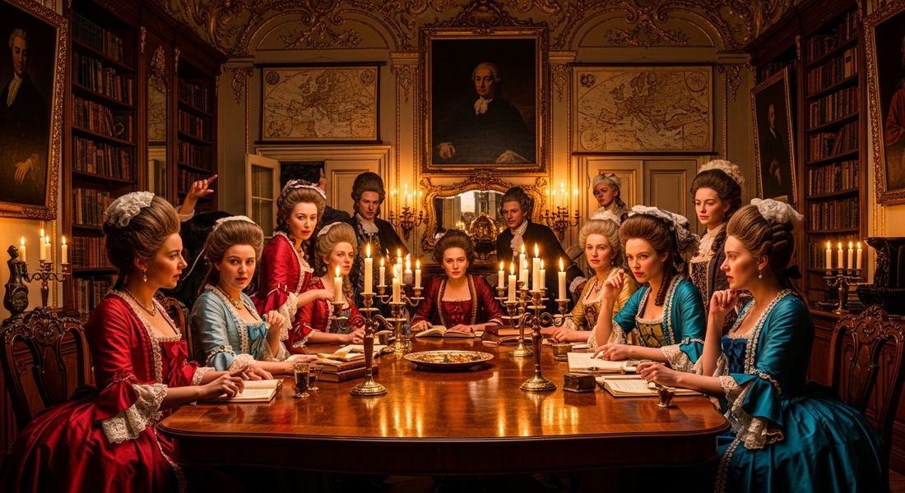
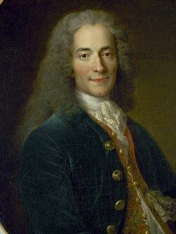
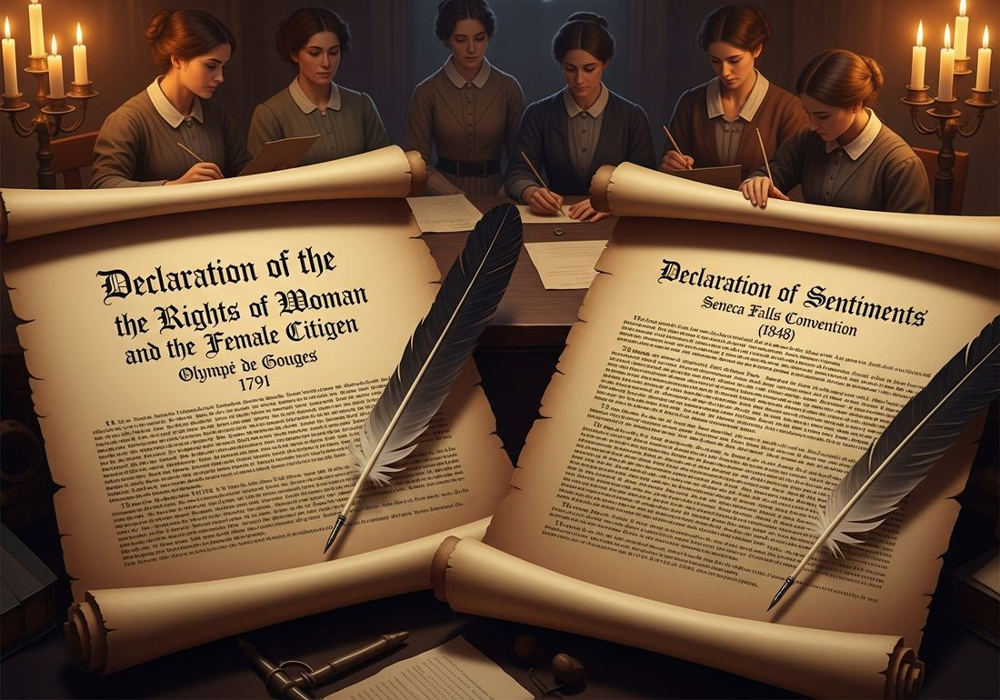

5.1 The Enlightenment
- LO-A: The Enlightenment's intellectual context — Enlightenment thinkers (c. 1650–1800) argued that reason, not tradition or religion, should guide human affairs. Locke said governments exist to protect natural rights (life, liberty, property); if they fail, the people may replace them. Montesquieu argued for separation of powers. Rousseau argued for popular sovereignty — the idea that political authority comes from the people. These ideas directly fueled Atlantic revolutions from 1776 onward.
- LO-B: Reform movements the Enlightenment inspired — Enlightenment logic — that all people are born with equal rational capacity — led reformers to challenge three major institutions: slavery, serfdom, and the exclusion of women from public life. Abolitionists used natural-rights arguments to attack the slave trade. Russia's Alexander II ended serfdom in 1861. The women's rights movement, from Wollstonecraft (1792) to Seneca Falls (1848), argued that Enlightenment ideals applied to women too. Key structure: ideas → reform → revolution — The AP exam treats Enlightenment ideas as the intellectual cause behind both reform movements and revolutions. Know the chain: Enlightenment philosophy → new political ideas about rights and government → challenges to monarchy and aristocracy → Atlantic revolutions. Also know the gap: Enlightenment ideals were written by men for men, which is exactly why women's rights activists pointed to the contradiction and demanded inclusion.
Try each question before revealing the answer.
1. John Locke argued that governments are formed to protect "life, liberty, and property" — and that if a government fails to do so, the people may overthrow it. Which later document most directly reflects this argument?
2. Mary Wollstonecraft's 1792 book argued that women were not naturally inferior to men — they only appeared so because they were denied education. How does this argument reflect Enlightenment thinking?
3. A historian writes: "The Enlightenment was a revolution of ideas before the political revolutions began." What evidence best supports this claim?
4. The Enlightenment called for reason over tradition. How might this idea challenge the authority of the Catholic Church in 18th-century Europe?
5. The Seneca Falls Convention (1848) issued a Declaration of Sentiments that began: "We hold these truths to be self-evident, that all men and women are created equal." What argument were the organizers making by echoing the Declaration of Independence?
- Explain the intellectual and ideological context in which revolutions swept the Atlantic world from 1750 to 1900. Explain how the Enlightenment affected societies over time.
Tap a term for its definition.
-
Definition: An 18th-century intellectual movement in Europe that emphasized reason, empirical inquiry, and individual rights over tradition and religious authority. Significance: Supplied the philosophical basis for the American, French, Haitian, and Latin American revolutions.
-
Definition: Rights that all people possess by virtue of being human — not granted by governments. Locke identified them as life, liberty, and property. Significance: The central idea behind revolutionary documents from 1776 onward; if rights are natural, no king can legitimately take them away.
-
Definition: The idea (developed by Locke, Rousseau, and others) that governments exist because people consent to be governed in exchange for protection of their rights. Significance: If a government breaks the contract by violating rights, the people may replace it — the philosophical justification for revolution.
-
Definition: The division of government into separate branches (legislative, executive, judicial) so that no single person or group holds all power. Developed by Montesquieu. Significance: Built into the U.S. Constitution and many later constitutions worldwide.
-
Definition: The principle that political authority derives from the people, not from monarchs or God. Associated with Rousseau's concept of the "general will." Significance: The foundational idea of modern democracy — governments derive their power from the consent of the governed.
-
Definition: The belief that knowledge comes from observation and evidence rather than tradition or revelation. Significance: The method of Enlightenment thinkers; it led them to question religious and political authority that could not be verified by reason.
-
Definition: The political movement arguing for women's equal rights — particularly the right to vote, own property, and participate in public life. Significance: Grew directly out of Enlightenment natural-rights logic; key figures include Wollstonecraft and the Seneca Falls organizers.
-
Definition: The movement to end slavery and the slave trade. Significance: Gained intellectual fuel from Enlightenment natural-rights arguments — if all people are born with natural rights, slavery is a violation of those rights. Led to emancipation across the Atlantic world in the 19th century.
💡 What Was the Enlightenment?
For most of human history, the basic answer to "Why does the king rule?" was simple: because God chose him. Political and religious authority reinforced each other. You obeyed the king because the Church said God willed it, and you obeyed the Church because the king enforced it.
The Enlightenment — an intellectual movement that spread across Europe roughly from the 1650s to the 1790s — challenged this entirely. Enlightenment thinkers argued that reason, not tradition or divine decree, should be the basis of both knowledge and government. They asked: what can we actually prove? What does a just government actually look like? What rights do people actually have?
Their answers shook the political world. The ideas they developed did not cause revolutions immediately — but when colonial subjects in America, enslaved people in Haiti, and citizens in France did rise up, they reached for Enlightenment arguments to justify what they were doing.

Parisian salons — gatherings hosted by educated women called salonnières — were where Enlightenment ideas circulated. Books were also smuggled across borders, spreading ideas governments tried to ban (Google Gemini, 2025), commercially licensed.
🏛️ The Big Ideas: Locke, Montesquieu, Rousseau

Portrait of Voltaire (1718), by Nicolas de Largillière. Musée Carnavalet, Paris. Voltaire was the most widely read of all Enlightenment philosophes — his sharp wit and attacks on religious intolerance spread across Europe and to the Americas. Public domain, Wikimedia Commons.
Three philosophers matter most for the AP exam because their ideas appear directly in revolutionary documents:
- John Locke (1632–1704) — Locke argued that people are born with natural rights: life, liberty, and property. Governments exist only to protect these rights. If a government violates them instead, the people have the right to overthrow it and form a new one. This is the logic that Thomas Jefferson borrowed for the Declaration of Independence.
- Montesquieu (1689–1755) — Montesquieu studied different forms of government and concluded that the best system divides power between three separate branches — legislative (makes laws), executive (enforces laws), and judicial (interprets laws). No branch should dominate the others. This became the model for the U.S. Constitution and many other constitutions.
- Jean-Jacques Rousseau (1712–1778) — Rousseau argued that political authority comes from the "general will" of the people — not from kings or God. This idea of popular sovereignty means governments must reflect what the people actually want. It became the philosophical basis for modern democracy.
📜 Enlightenment Ideas in Revolutionary Documents
Enlightenment ideas were not just abstract philosophy — they showed up word for word in the documents that launched revolutions:
- American Declaration of Independence (1776) — Written by Thomas Jefferson, it opens by stating that all men are created equal and endowed with "unalienable rights" including life, liberty, and the pursuit of happiness. Governments are formed to protect these rights. When they fail, the people may alter or abolish them. This is Locke almost verbatim.
- French "Declaration of the Rights of Man and of the Citizen" (1789) — Proclaimed that all men are born free and equal in rights, and that the source of all sovereignty rests in the nation (popular sovereignty). It lists specific rights that government must protect and cannot violate.
- Simón Bolívar's "Letter from Jamaica" (1815) — Written on the eve of Latin American revolutions, Bolívar argued that Spanish colonists in the Americas had developed their own identity and deserved self-government. He drew on Enlightenment ideas about reason, rights, and representative government to make the case for independence.
👩 Reform Movements: Rights Expand (Unevenly)
The Enlightenment did not only inspire revolutions. It also gave ammunition to reform movements that worked within existing systems to expand rights. The logic was simple: if all humans possess reason, then all humans deserve equal rights — and the current systems that deny rights to women, enslaved people, and serfs are unjust.
Abolition of slavery: Enlightenment natural-rights arguments were central to the abolitionist movement. If people have natural rights by virtue of being human, slavery is a direct violation. British abolitionists like William Wilberforce, and American abolitionists like Frederick Douglass, used this logic. The British slave trade was abolished in 1807; slavery ended in the British Empire in 1833. American emancipation came in 1863.
End of serfdom: In Russia, millions of peasants (serfs) were legally bound to the land and could be bought and sold with it — a condition not far from slavery. Alexander II abolished serfdom in 1861, partly influenced by Enlightenment ideas about human dignity and partly by Russia's need to modernize. (The Emancipation Proclamation and Russian emancipation both happened in 1861–1863 — not a coincidence: both were influenced by the same intellectual climate.)

The women's rights movement produced its own founding documents — Olympe de Gouges's Declaration of the Rights of Woman (1791) and the Seneca Falls Declaration of Sentiments (1848) — modeled deliberately on the male-authored documents that excluded women (Google Gemini, 2025), commercially licensed. The women's rights movement produced its own founding documents — Olympe de Gouges's *Declaration of the Rights of Woman* (1791) and the Seneca Falls *Declaration of Sentiments* (1848) — modeled deliberately on the male-authored documents that excluded women (Google Gemini, 2025), commercially licensed.
🚺 Women's Rights: From Wollstonecraft to Seneca Falls
The most direct and sustained application of Enlightenment ideas to an excluded group was the women's rights movement. Three examples are required by the AP CED:
- Mary Wollstonecraft — A Vindication of the Rights of Woman (1792) — Wollstonecraft argued that women appeared inferior to men not because they were naturally inferior, but because they were denied education. If women were educated and treated as rational beings, they would prove their equal capacity for reason. Therefore, women deserved the same political and civil rights as men. Published in England, this was one of the first systematic arguments for women's equality.
- Olympe de Gouges — Declaration of the Rights of Woman and of the Citizen (1791) — Written in France during the Revolution, de Gouges challenged the male-authored Declaration directly, arguing that if liberty and equality were truly universal, they must include women. She called for women's right to vote, to hold public office, and to speak in public.
- Seneca Falls Convention (1848) — Organized by Elizabeth Cady Stanton and Lucretia Mott in upstate New York, this was the first women's rights convention in the United States. The organizers issued a Declaration of Sentiments — modeled on the Declaration of Independence — listing grievances against a system that denied women the vote, property rights, and equal standing before the law. It launched the organized suffrage movement in the U.S.
Nothing added yet. To attach a Google NotebookLM audio overview, video overview, or infographic to this topic: open this file — build/data/content/ap-world-history/5-1.json — and add an entry to notebookLmResources with a title and a shareable link (or paste an embed <iframe> directly into this block in the generated HTML file if you're editing the page by hand instead).
- A) Jean-Jacques Rousseau, in his concept of the "general will"
- B) Montesquieu, in his argument for the separation of powers
- C) Voltaire, in his arguments against religious intolerance
- D) John Locke, in his argument that governments exist to protect natural rights and may be replaced if they fail
- A) Hereditary monarchies that claimed authority without the consent of the governed
- B) The spread of democratic republics across Europe
- C) The economic systems of mercantilism and colonial trade
- D) The role of the Catholic Church in educating European citizens
- A) That only men of property should participate in government
- B) That reason is the basis of human dignity, and women possess reason equally with men
- C) That religious guidance, rather than secular reason, should govern personal behavior
- D) That women were naturally suited to roles in domestic life rather than public affairs
- A) The authority of the Catholic Church to grant absolution
- B) The French colonial empire in the Caribbean
- C) The absolute monarchy of Louis XVI, whose authority rested on divine right rather than popular consent
- D) The power of local provincial governors to collect taxes
- A) Arguing that the United States should expand its own founding principles to include women, using Americans' stated ideals against their exclusionary practices
- B) Calling for the United States to adopt a parliamentary system modeled on the British government
- C) Demanding that religious institutions formally recognize women's equal spiritual status
- D) Protesting the exclusion of women from the abolitionist movement
Answer all three parts (A, B, C). Write your response before clicking to see sample answers.
Part A
Identify ONE specific Enlightenment idea that influenced political revolutions in the period 1750–1900.
Part B
Explain ONE way Enlightenment ideas contributed to a reform movement other than political revolution in the period 1750–1900.
Part C
Explain ONE way the women's rights movement in the period 1750–1900 both drew on and extended Enlightenment ideas.
Write a thesis before revealing. A strong thesis: restates the prompt's verb phrase, adds a quantifier ("to a great/limited extent"), and ends with because [A] and [B] — where A and B are your two body paragraph arguments.
📝 My Notes (edit this yourself — no AI needed)
This box is yours. Open this page's HTML file directly (in GitHub's editor or any text editor), find the <!-- MY-NOTES-START --> comment below, and type between the markers — corrections, extra context for this year's students, a link, anything. Changes show up as soon as you save and re-publish the file — nothing else on the page will change.
(Add your own notes, corrections, or extra context here.)